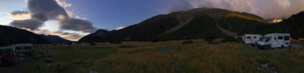
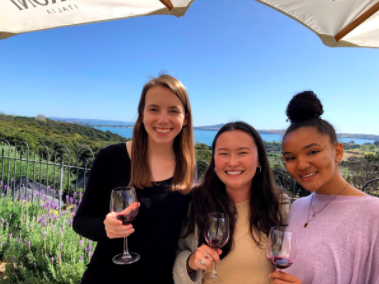
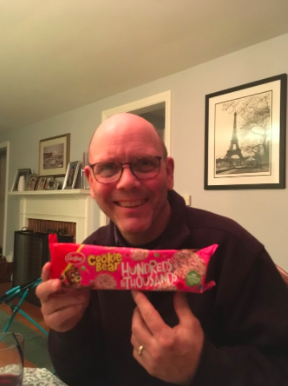
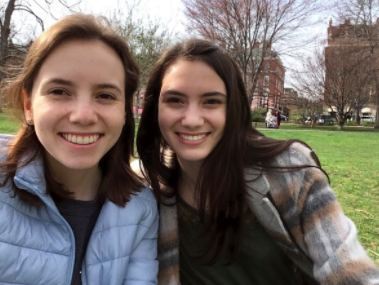

Return Home

Saying Goodbye to Aotearoa New Zealand
When I returned to Auckland after my trip around the South Island, I began my internship at the National Institute of Water and Atmospheric Research (NIWA). After two short weeks at my new internship, we learned that the program was canceled due to COVID-19, and we would be flying home three days later.
Naturally, I was upset that my once-in-a-lifetime experience was being cut short. The rising death toll around the world was a good reminder to me that I should be thankful my family and friends were healthy and safe. I get to be disappointed while also recognizing that many people are facing much worse consequences of this pandemic.

Returning to Boston
The transition to life at home was more difficult than I expected. While I was happy to see my family, I definitely felt sorry for myself. I missed my independence in Auckland, I missed my friends who I would not see again until September, and I was so disappointed that my experience was ruined by such a statistically unlikely occurrence.
I was relieved to learn that I could continue my internship remotely, particularly because I had been so excited about it. However, I knew that this meant I would be missing out on some of the coolest aspects of the internship, including working with live organisms in the lab and participating in overnight field work trips.
I had plenty of time at home to reflect on the previous few months, and I soon realized that I had a choice to make. I was so fortunate to have had an incredible two and a half months abroad, and now I was safe at home with family. I could either continue to sulk about a situation that I had no control over, or I could say to myself--now what? I made a conscious effort to choose the latter.

Why a Website?
This brings me to the medium I chose for this project--a website. One benefit of coming home early and being forced to quarantine in my house for months was that I have gotten to spend a lot of time with my family. With concerns that my remote internship would not be as valuable of an experience, I was hoping to find some new skills to develop during this time.
My sister, Audrey, is a freshman in college and is studying computer science and web design. I realized that we could create a website from scratch together for this project. Audrey got to practice and expand on her coding skills, and she taught me how to use HTML and CSS to create and design a website. We both gained some practical experience and took advantage of the limited time we have living in the same house to collaborate on the design of this project. This website reflects my decision to make the most of my time at home, and spending time with my sister while learning a new skill was a perfect way to accomplish this.
Websites are typically available to the public and intended to be shared, but I see this as more of a blog for my own personal benefit. This is a journal of my thoughts and experiences; the act of writing down everything I’m thinking is cathartic. I am telling this story so that I can look back and reflect on my experiences with the emotion I felt in that moment.
I studied abroad to push myself outside of my comfort zone, to get comfortable with being uncomfortable, and to accept that my plans will not always work out perfectly. In a strange way, these experiences continued on a larger scale when I was sent home. My experience abroad did not work out as planned, but instead of lamenting about a situation I could not change, I tried to make the best of my new situation at home. This website itself is one part of that effort.
